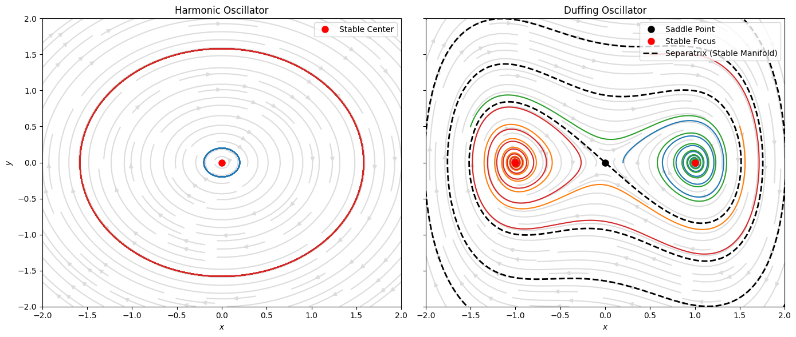
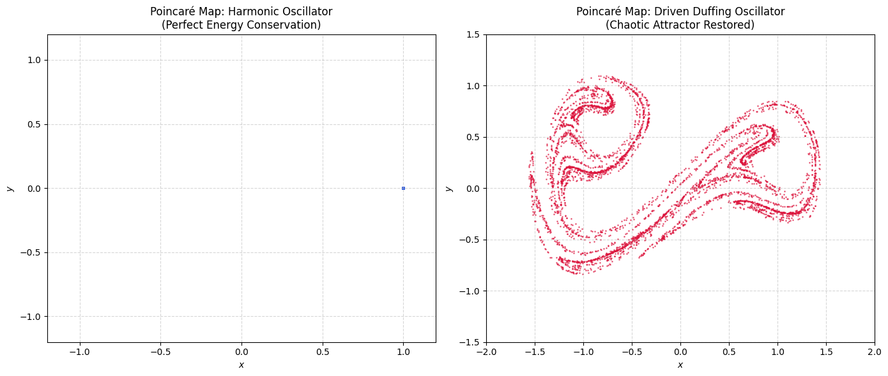
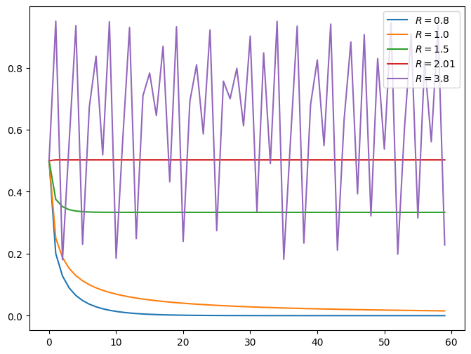

Non-linear dynamics and chaos#

Ths stability of the solar system#
The King’s Prize and the Unstable Universe
For a long time after Isaac Newton, scientists thought the universe was like a giant, predictable clock. They believed that if you knew where the planets were today, you could use math to predict their positions forever. But there was a big, scary question: Is our solar system actually safe, or will a planet one day fly out into deep space? In 1887, King Oscar II of Sweden offered a big prize to anyone who could prove the solar system is stable. This was called the \(n\)-body problem—predicting how many planets move when pulling on each other with gravity.
Henri Poincaré’s Big Mistake

A smart French mathematician named Henri Poincaré tried to solve it. To make it easier, he looked at just three objects (like the Sun, Earth, and Moon). This is the famous Three-Body Problem. At first, Poincaré thought he solved it and won the King’s prize. But before the paper was printed, someone found a mistake in his math. When Poincaré tried to fix it, he found something shocking. He realized that even with just three objects, the math became super complicated. The paths of the planets looked like a crazy, messy web. Poincaré discovered deterministic chaos. He realized that even if you know the rules of gravity, a tiny, invisible change in the beginning can completely change the final result.
The Start of Chaos Theory: Henri Poincaré’s (one of many) Big Contribution
Poincaré’s discovery changed science forever. He understood that we cannot always predict the exact future with perfect formulas. Instead, he started a new field called Dynamical Systems. He stopped asking, “Where exactly will the Earth be in a billion years?” and started asking bigger questions, like, “What are the general shapes of these orbits over time?” Decades later, computers helped scientists fully understand “Chaos Theory” and the famous “Butterfly Effect.” But it all started because Poincaré looked at the stars and realized nature is beautifully unpredictable.
You can read more about the solar system stability, which might be of interest, at https://physics.aps.org/articles/v16/57
Linear vs Nonlinear Dynamics#
In most introductory physics courses, we study linear systems because they are mathematically tractable and often provide excellent approximations for small perturbations.
However, many real physical systems are fundamentally nonlinear, and their behavior can differ dramatically from linear intuition.
Linear |
Non-linear |
|---|---|
Superposition works: \(F(a x_1 + b x_2) = aF(x_1) + bF(x_2)\) |
Superposition does not work, contains terms like \(x^2, y^2, xy\) |
amplitudes scale proportionally |
non-proportional |
frequencies do not interact |
frequencies interact |
behavior is often predictable and analytically solvable |
bifurcations may appear, multiple equilibria can exist |
non-chaotic |
chaos becomes possible |
Harmonic oscillator: \(m\ddot x + kx = 0\) |
Duffing oscillator: \(\ddot x + \delta \dot x + \alpha x + \beta x^3 = 0\) |
Phase Space and Dynamical Systems#
Instead of focusing only on the position of a system, phase space represents the complete dynamical state. It relates typically a state variable and its derivative, like \(x\) and \(v_x\). it condenses a lot of dynamical information even without actually solving the differential equation. it also helps identify fixed points (thath do not evolve), and check their stability:
stable,
unstable,
Stability determines whether nearby trajectories move toward or away from the fixed point.

Fig. 1 From: https://en.wikipedia.org/wiki/Stability_theory#
Nonlinear systems can produce much richer phase-space structures than linear systems:
multiple attractors,
limit cycles,
chaotic attractors,
bifurcations.
Phase space provides a geometric way to understand dynamics without solving equations analytically.

Exercise 1 (Phase map for the non-linear pendulum)
Compute the phase map for the non-linear pendulum and for many initial conditions. What happens at low amplitudes?
Poincaré Map#
https://en.wikipedia.org/wiki/Poincaré_map
Here we introduce a forcing term so the oscilators do not reach the single stable point, and we project the dynamics into a plane.

Exercise 2 (Duffing attractor properties)
Look for the Duffin atractor properties. Is it “strange”? what does that mean?
Exercise 3 (Poincaré map for the non linear pendulum)
Plot the poincaré map for the non-linear pendulum. What effect does the sampling frequency has?
The logistic map: Finite-difference equations#
(Based on Understanding Non-linear Dynamics, Kaplan; and Nonlinear Dynamics and Chaos, Strogatz)
A finite difference equations allows to obtain the new value for a given variable, from the current value, as a function of discrete time steps. This functional relationship can be written as
where the function \(f\) characterizes the mapping. Sometimes, \(x_{t+1}\) is denoted as \(x'\).
Our goal is to explore the rich behaviour this simple map has, and characterize its chaotic behaviour, represented in the famous bifurcation map:

Fig. 2 From: https://en.wikipedia.org/wiki/Bifurcation_diagram#
The logistic map#
The logistic map has been used to model several kind of systems and its origins are related to the study of the pulation dynamics. Imagine that \(x_{t}\) denotes the population of certain system at time \(t\). One expects that if the population is small, then it will grows proportionally to the current population, \(x_{t+1} \propto x_{t}\). But, if the population is too large, then competion for resources will decrease the population, \(x_{t+1} \propto 1 - x_{t}\). Therefore, one can model the population as
This is the logistic maps, and its simplicity hides a very rich behaviour. A typical figure (for a normalized) is as follows
<matplotlib.legend.Legend at 0x7fb9ebd8d390>

As you can see, the actual behaviour of the solutions is very different from the linear map, and there are some ranges for \(R\) where the solutions is steady, decaying, periodic, and non-periodic.
Actually, it is uncommon to focus on the \(x_{t}\ vs.\ t\) plot, since it can hide a lot of information. For example, how can you now that actually you are looking at some steady state? or you need to perform more iterations? In these cases is customary to rely on return maps or phase portraits, that is, plots of \(x_{t+1} \ vs. \ x_{t}\). In this case is easy to check if the system is reaching a single point, like \(x = 0\), or a periodic orbit, or something much strange (like a fractal). Let’s plot the return map for the previous values of \(R\).
As you can see, the trajectory is well defined, but the path on it is not regular. In order to generate the full trayectory, we need to test much more initial conditions.
Cobweb plots#
They plot the curve \(y = f(x)\) alongside the line \(y = x\). By drawing lines vertically to the curve and horizontally to the diagonal, you can visually “see” the iteration process and understand why fixed points become unstable when the slope of the curve is steeper than 1. See: https://en.wikipedia.org/wiki/Cobweb_plot

Fig. 3 From: https://en.wikipedia.org/wiki/Bifurcation_diagram#
Local stability and fixed points#
A fixed point is a point where \(x_{t+1} = f(x_t) = x_t\) (or, for continous equations, \(0 = dx/dt\)). The behavior of small perturbations around this points are related to the stability of the fixed point. If the small perturbations separates from the point, the point is said to unstable. Otherwise it is stable.
Let’s assume the existence of a fixed point, \(x_p\). A small perturbation around it can be written as $\(\eta = x_t - x_p\)$, therefore,
in other words,
Therefore, if \(|f'(x_p)| > 1\), the point is unstable; else, if \(|f'(x_p)| < 1\), the point is stable (The equivalent for continous functions is with \(f'(x_p) > 0\) etc).
Exercise 4 (Fixed points for some maps)
Compute the fixed points and the stability for the following maps: \(x_{t+1} = Rx_t(1-x_t)\), and \(x_{t+1} = R\cos x\) .
The fixed points for the logistic map are \(a = 0\) and \(b = (R-1)/R\), and the criteria for stability are \(R\) and \(2\), respectively. Assuming \(R > 1\), then \(a\) is unstable and \(b\) is stable.
If a point is locally stable, then some iterations would be needed to reach it. Those iterations are called the transient.
Note
The set of local initial conditions which reach the same limit fixed point is called the basin of atraction of the fixed point. They can have a very complicated geometry.
Cycles#
A cycle or \(n\)th-order is a trajectory which repeats itself, defined as
but \(x_{t+j} \neq x_t\), for \(j = 1, 2, 3, \ldots, n-1\).
A fixed point is a cycle of period 1. A cycle of period 2 is defined as \(x_{t+2} = f(x_t) = f(f(x_t))\). If the function \(x_{t+1} = f(x_t)\) has a period-2 cycle, then the function \(f(f(x_t))\) has, at least, two fixed points. Longer cycles can be found similarly: “just” solve the equation
Exercises#
Exercise 5 (Analytical Period-2 Cycles)
For the logistic map, a period-2 cycle oscillates between two distinc points, \(p\) and \(q\). To do so:
Write down the condition \(p = f(f(p))\)
Analytically find the \(p\) ad \(q\) values, taing into account that you already know two roots: \(0\) and \(1 - 1/R\).
For what \(R\) values the cycle is stable?
Chaos#
A deterministic system can present chaotic behavior, showing the following characteristics:
Aperiodicity
Bounded solutions
Deterministic.
Sensitive dependence on initial conditions.
An example of the last one is given by the following: Let’s use the logistic map with \(R = 4\), and two initial conditions, \(a = 0.523423\) and \(b = 0.523424\):
%matplotlib inline
import matplotlib.pyplot as plt
import numpy as np
N = 50
R = 4.0
def iterate(data, R):
for i in range(1, N):
data[i] = R*data[i-1]*(1-data[i-1])
# Iteration settings
t = np.arange(0, N)
xdata = np.zeros(N)
xdata[0] = 0.523423
ydata = np.zeros(N)
ydata[0] = 0.523424
# plot settings
fig, ax = plt.subplots(figsize=(8,6))
# Maps for several values of R
iterate(xdata, R)
plt.plot(t, xdata, label=r'$x_0 = %.6f$'%(xdata[0]))
iterate(ydata, R)
plt.plot(t, ydata, label=r'$x_0 = %.6f$'%(ydata[0]))
fig.savefig("fig/initialcond.png")
plt.legend()
<matplotlib.legend.Legend at 0x7fb9fde9b350>

Lyapunov exponents#
Lyapunov exponents quantify the average exponential rates at which infinitesimally close trajectories in a dynamical system diverge or converge. They are the primary diagnostic for chaos: a positive largest Lyapunov exponent indicates sensitive dependence on initial conditions, while negative exponents signal stability and attraction to invariant sets.

Fig. 4 From: https://en.wikipedia.org/wiki/Lyapunov_exponent#

For the largest Lyapunov coefficient, and a continuum map \(F\), one has
For a discrete map \(\mathbf{x}_{n+1} = F(\mathbf{x}_n)\), the \(i\)-th Lyapunov exponent is defined as:
where \(\delta \mathbf{x}_n^{(i)}\) evolves via the variational equation
with
the Jacobian matrix. For a 1D map \(x_{n+1} = f(x_n)\), this simplifies to:
See:
Exercise 6
Compute the expression for the logistic map
%matplotlib inline
import numpy as np
import matplotlib.pyplot as plt
def lyapunov_logistic(r, N=1000, transient=500, x0=0.5):
# YOUR CODE HERE
pass
# Parameter sweep
r_vals = np.linspace(2.5, 4.0, 1000)
lambda_vals = np.array([lyapunov_logistic(r) for r in r_vals])
# Plot
plt.figure(figsize=(8, 5))
plt.plot(r_vals, lambda_vals, 'b-', linewidth=1.5)
plt.axhline(0, color='k', linestyle='--', linewidth=0.8)
plt.xlabel('Parameter $r$')
plt.ylabel('Largest Lyapunov Exponent $\\lambda$')
plt.title('Lyapunov Exponent vs. $r$ for the Logistic Map')
plt.grid(True, alpha=0.3)
plt.tight_layout()
plt.savefig("fig/lyapunov_logistic.png")
plt.show()
Cell In[9], line 7
pass
^
IndentationError: expected an indented block after function definition on line 5
The route to chaos#
See https://en.wikipedia.org/wiki/Period-doubling_bifurcation
The logistic map, and actually any map with a quadratic maximum, show the period-doubling route to chaos. After varying the constant \(r\), the final values (after transient) start to reach one, then 2, then four and so on values. To visualize it , we use the bifurcaton diagram: visualizes how the long-term attractor evolves as the control parameter \(r\) increases from \(2.5\) to \(4\). For each \(r\), the map is iterated after discarding an initial transient; the remaining \(x_n\) values are plotted vertically against \(r\). The diagram reveals a period-doubling cascade: a stable fixed point splits into 2-cycles, then 4-cycles, 8-cycles, and so on, accumulating at \(r_\infty \approx 3.56995\) before transitioning to chaos.
Universality: This period-doubling route to chaos is not specific to the logistic map. It is a universal characteristic of all smooth, unimodal maps \(f(x)\) with a single quadratic maximum (i.e., \(f''(x_c) \neq 0\)). The geometric scaling of the bifurcation parameter values and the spatial scaling of the attractor branches are governed by universal constants discovered by Mitchell Feigenbaum (1978), independent of the map’s specific functional form.

Exercise 7 (Compute the bifurcation diagram for the logistic map)
For each \(r\), run the iteration many times. Discard some transient and store the final value. Plor a scatter plot of that final value as function of \(r\).
import numpy as np
import matplotlib.pyplot as plt
def bifurcation_diagram(r_min=2.5, r_max=4.0, N_r=200, N_iter=1000, transient=500):
r_vals = np.linspace(r_min, r_max, N_r)
x = 0.5 * np.ones(N_r)
final_points, r_final = [], []
# YOUR CODE HERE
pass
return np.array(r_final), np.array(final_points)
r, x = bifurcation_diagram()
plt.figure(figsize=(8, 5))
plt.plot(r, x, ',k', alpha=0.25, markersize=1)
plt.xlabel('Parameter $r$')
plt.ylabel('Attractor $x$')
plt.title('Bifurcation Diagram of the Logistic Map')
plt.grid(True, alpha=0.3)
plt.tight_layout()
#plt.savefig("fig/bifurcation.png")
plt.show()
The Feigenbaum Constants#
Let \(r_n\) denote the value of \(r\) at which the \(n\)-th period-doubling bifurcation occurs (i.e., where a period-\(2^{n-1}\) cycle becomes period-\(2^n\)). The sequence begins:
Feigenbaum (1978) observed that these values converge geometrically:
This is the first Feigenbaum constant \(\delta\). It measures how rapidly successive bifurcations compress along the \(r\)-axis.
The second Feigenbaum constant \(\alpha\) describes the self-similar scaling of the attractor’s amplitude:
where \(d_n\) is the width of the attractor (distance between the two sub-branches) at the \(n\)-th bifurcation.
Both constants are universal: they are identical for every smooth unimodal map, regardless of its specific functional form. This universality was proved rigorously using renormalization group methods (Lanford, Collet–Eckmann–Koch, 1980s).
Computing the Feigenbaum Constants Numerically#
Strategy#
Find the superstable parameter \(R_n\) for each period \(2^n\) — the \(r\) at which the orbit passes exactly through the critical point \(x_c = 0.5\) (where \(f'(x_c)=0\)). Superstable orbits are easy to locate because the map’s derivative vanishes there, making Newton’s method converge quadratically.
Compute \(\delta\) from successive differences of \(R_n\).
Compute \(\alpha\) from the attractor widths at each \(R_n\).
Summary#
Quantity |
Symbol |
Value |
Meaning |
|---|---|---|---|
First Feigenbaum constant |
\(\delta\) |
\(4.6692016091\ldots\) |
Rate of compression of bifurcation intervals along \(r\) |
Second Feigenbaum constant |
\(\alpha\) |
\(2.5029078750\ldots\) |
Self-similar scaling of attractor width |
Accumulation point |
\(r_\infty\) |
\(3.5699456718\ldots\) |
Onset of chaos in the logistic map |
The Feigenbaum constants are as fundamental as \(\pi\) or \(e\): they are dimensionless, universal, and appear in physical systems far removed from the logistic map — a remarkable bridge between simple mathematics and the deep structure of chaos.
Chaos in a more complex system: the non-linear driven pendulum#
Many continuous system display chaotic behaviour. The study of dynamical systems goes back to Poincaré. He develop many methods to devise if the solar system was stable. Among them, the Poincaré section, where the points crossing a surface are plotted, allows to reduce the dimensoionality of the space describing the system dynamics, and is complementary to the typical phase space. For exampple, for the Duffing oscillator, you find something like https://en.wikipedia.org/wiki/Poincaré_map.
As an example of a continuous chaotic system, we will explore the dynamics of the non-linear driven damped oscillator, described by
Of course, you need you transform this second order equation into a coupled system of two first order equations. Let’s explore the dynamics as function of the force amplitud \(F_D\), while fixing the remaining parameters to \(q = 1/2, l = g = 9.8, \Omega_D = 2/3, \theta_0 = 0.2, \omega_0 = 0\). A typical time series from this system is
# global imports
%matplotlib inline
import numpy as np
import matplotlib.pyplot as plt
from scipy.integrate import odeint
# global parameters
Q = 1.0/2.0
G = 9.8
L = 9.8
WD = 2.0/3.0
# initial conditions
X0 = 0.2
V0 = 0.0
# function to return the derivatives
def derivatives(state, t, FD):
xd = state[1]
yd = -G*np.sin(state[0])/L - Q*state[1] + FD*np.sin(WD*t)
return xd, yd
# solving the differential equation
state0 = np.array([X0, V0])
t = np.linspace(0, 40, 1000) # dt = 0.1
for FD in [0.0, 0.5, 1.2] :
state = odeint(derivatives, state0, t, (FD,))
# Plot the solution
plt.plot(t, np.fmod(state[:,0], np.pi), '-', label=r"$F_D = %.2f$"%(FD))
plt.xlabel('Time')
#plt.ylabel('$x, v$', fontsize=20)
plt.legend(fontsize=15, bbox_to_anchor=(1.4, 1.05))
Sensitivity to initial conditions#
For \(F_D = 1.2\), we can check if two nearby trajectories diverge (exponentially), which is a signature of chaos. Plot the difference between two close solutions to check if there is any exponential divergence.
# global imports
%matplotlib inline
import numpy as np
import matplotlib.pyplot as plt
from scipy.integrate import odeint
# global parameters
Q = 1.0/2.0
G = 9.8
L = 9.8
WD = 2.0/3.0
# initial conditions
V0 = 0.0
# function to return the derivatives
def derivatives(state, t, FD):
# YOUR CODE HERE
pass
return xd, yd
# solving the differential equation
t = np.linspace(0, 150, 1000) # dt = 0.01
FD = 1.2
X0 = 0.2
state0 = np.array([X0, V0])
state1 = odeint(derivatives, state0, t, (FD,))
X0 = 0.2001
state0 = np.array([X0, V0])
state2 = odeint(derivatives, state0, t, (FD,))
# Plot the difference
plt.plot(t, np.abs(state1[:,0] - state2[:, 0]), '-', label=r"$\Delta \theta$")
plt.yscale("log")
plt.xlabel('Time')
#plt.ylabel('$x, v$', fontsize=20)
plt.legend(fontsize=15, bbox_to_anchor=(1.0, 1.05))
plt.savefig('fig/lyapunov_pendulum.png')
As you can see, there is an exponential grow on the difference of the two trajectories, which is a signature of chaos. (The exponential behaviour is at the beginning if the curve, since its trend is linear in a semilog plot). This also shows that the Lyapunov exponent is larger than zero.
Phase portrait#
Let’s compare the phase portrait for \(F_D = 0.5\) and \(F_D = 1.2\)
# global imports
%matplotlib inline
import numpy as np
import matplotlib.pyplot as plt
from scipy.integrate import odeint
import matplotlib.cm as cm
# global parameters
Q = 1.0/2.0
G = 9.8
L = 9.8
WD = 2.0/3.0
# initial conditions
V0 = 0.0
X0 = 0.2
# function to return the derivatives
def derivatives(state, t, FD):
# YOUR CODE HERE
pass
return xd, yd
# solving the differential equation
t = np.arange(0, 150, 0.1) # dt = 0.1
FD = 0.5
state0 = np.array([X0, V0])
state1 = odeint(derivatives, state0, t, (FD,))
FD = 1.2
state0 = np.array([X0, V0])
state2 = odeint(derivatives, state0, t, (FD,))
# Plot the phase portrait
fig, axes = plt.subplots(2, 2, figsize=(10, 10) )
axes[0, 0].scatter(state1[:,0], state1[:,1], c=t, label=r"$F_d = 0.5$")
axes[1, 0].scatter(np.fmod(state1[:,0], 2*np.pi), state1[:,1], c=t, label=r"$F_d = 0.5$")
axes[0, 1].scatter(state2[:,0], state2[:,1], c=t, label=r"$F_d = 1.2$")
axes[1, 1].scatter(np.fmod(state2[:,0], 2*np.pi), state2[:,1], c=t, label=r"$F_d = 1.2$")
axes[0, 0].legend(fontsize=15, bbox_to_anchor=(1.0, 1.05))
axes[0, 1].legend(fontsize=15, bbox_to_anchor=(1.0, 1.05))
Exercise: Compute the bifurcation diagram.
Strange attractors and fractals#
https://en.wikipedia.org/wiki/Attractor
A chaotic dynamical system does not settle onto a fixed point or a periodic orbit. Instead, trajectories wander forever in a bounded region of phase space, never repeating — yet never escaping. The geometric object they trace out is called a strange attractor.
Strange attractors are fractal: they have a non-integer dimension, and they display intricate fine structure at every scale. Two hallmarks distinguish them:
Sensitivity to initial conditions: nearby trajectories diverge exponentially (positive Lyapunov exponent).
Fractal geometry: the attractor has a non-integer dimension \(D_f\), reflecting its layered, Cantor-set-like cross-section.
The fractal dimension of the attractor is a fundamental invariant of the chaotic system — it captures how “thick” the chaos is in phase space.
A fractal (See https://en.wikipedia.org/wiki/Fractal) is a geometric object that exhibits self-similarity across scales: zooming in reveals structure that resembles the whole, no matter how deeply you look. Familiar examples include coastlines, snowflakes, and fern leaves. But fractals are more than a visual curiosity — they require a generalization of the intuitive notion of dimension.
In classical geometry, dimension is an integer: a line is 1D, a plane is 2D, a solid is 3D. The fractal (Hausdorff) dimension \(D\) is in general a non-integer. It quantifies how efficiently an object fills space as you zoom in. A fractal curve, for example, is more than a line but less than a plane, so \(1 < D < 2\).
The key intuition: if you scale an object by a factor \(\varepsilon\), the number of self-similar pieces \(N\) it breaks into scales as:
This is the foundation of box-counting.
Attractor |
Type |
Phase space |
\(D_{KY}\) (known) |
Character |
|---|---|---|---|---|
Lorenz |
ODE (3D) |
\(\mathbb{R}^3\) |
\(\approx 2.06\) |
Butterfly, weakly fractal |
Rössler |
ODE (3D) |
\(\mathbb{R}^3\) |
\(\approx 2.01\) |
Spiral band |
Hénon |
Map (2D) |
\(\mathbb{R}^2\) |
\(\approx 1.26\) |
Folded ribbon |
Duffing |
Forced ODE (3D) |
\(\mathbb{R}^2\times S^1\) |
\(\approx 1.4\)–\(2.0\) |
Driven oscillator |
Ikeda |
Map (2D, complex) |
\(\mathbb{R}^2\) |
\(\approx 1.70\) |
Optical cavity chaos |
Thomas |
ODE (3D) |
\(\mathbb{R}^3\) |
\(\approx 2.08\) |
Labyrinthine |
The Hénon Map — A Minimal Chaotic Attractor#
The Hénon map (Michel Hénon, 1976) is the simplest 2D discrete map known to produce a genuine strange attractor. It is defined by:
with canonical parameters \(a = 1.4\), \(b = 0.3\). It is a contraction (the Jacobian determinant is \(|{-b}| = 0.3 < 1\), so phase-space volume shrinks), yet it also folds trajectories — the combination of stretching and folding generates the fractal layering.
import numpy as np
import matplotlib.pyplot as plt
def henon_attractor(a=1.4, b=0.3, n=200_000, warmup=1000, x0=0.0, y0=0.0):
"""Iterate the Hénon map and return attractor points."""
x, y = x0, y0
# discard transient
for _ in range(warmup):
x, y = 1 - a*x**2 + y, b*x
xs, ys = np.empty(n), np.empty(n)
for i in range(n):
x, y = 1 - a*x**2 + y, b*x
xs[i], ys[i] = x, y
return xs, ys
xs, ys = henon_attractor()
fig, ax = plt.subplots(figsize=(10, 6))
ax.scatter(xs, ys, s=0.05, c='black', alpha=0.5)
ax.set_title("Hénon Strange Attractor ($a=1.4,\\ b=0.3$)", fontsize=14)
ax.set_xlabel("$x$"); ax.set_ylabel("$y$")
ax.set_aspect('equal')
plt.tight_layout()
#plt.savefig('fig/henon_attractor.png', dpi=200)
plt.show()
Measuring the Fractal Dimension: Box Counting#
Divide the phase plane into a grid of square boxes of side length \(\varepsilon\). Count \(N(\varepsilon)\): the number of boxes that contain at least one attractor point. If the attractor is fractal, this count scales as a power law:
Taking logarithms:
So \(D_0\) is the (negative) slope of \(\log N\) vs \(\log \varepsilon\) in the limit \(\varepsilon \to 0\). This is the box-counting dimension (also called the Minkowski–Bouligand dimension or \(D_0\)).
For a smooth curve: \(D_0 = 1\). For a filled area: \(D_0 = 2\). For the Hénon attractor: \(D_0 \approx 1.26\), a non-integer confirming its fractal nature.
Exercise 8 (Fractal dimension)
Implement the box counting algorithm to compute the fractal dimension of the Henon strange attractor
import numpy as np
import matplotlib.pyplot as plt
from scipy.stats import linregress
def box_counting_dimension(xs, ys, eps_values=None, plot=True):
"""
Estimate the box-counting dimension D0 of a 2D point cloud.
Parameters
----------
xs, ys : array-like — attractor coordinates
eps_values : array-like — box sizes to use (in data units)
plot : bool — show the log-log scaling plot
Returns
-------
D0 : float — estimated box-counting dimension
"""
# YOUR CODE HERE
pass
print(f"Box-counting dimension D0 ≈ {D0:.4f} (R² = {r**2:.6f})")
if plot:
fig, ax = plt.subplots(figsize=(7, 5))
ax.scatter(log_eps, log_N, color='steelblue', zorder=3, label='Data')
ax.plot(log_eps, slope*log_eps + intercept, 'r--',
label=f'Fit: slope = {slope:.4f}')
ax.set_xlabel(r'$\log\,\varepsilon$', fontsize=13)
ax.set_ylabel(r'$\log\,N(\varepsilon)$', fontsize=13)
ax.set_title(f'Box-Counting Dimension → $D_0 \\approx {D0:.3f}$',
fontsize=14)
ax.legend()
plt.tight_layout()
plt.savefig('fig/box_counting_fit.png', dpi=200)
plt.show()
return D0
xs, ys = henon_attractor(n=500_000)
D0 = box_counting_dimension(xs, ys)
import os
from IPython.display import Image, display
img_path = "fig/box_counting_fit.png"
if os.path.exists(img_path):
display(Image(filename=img_path))
The Correlation Dimension \(D_2\)#
Box counting is intuitive but sensitive to sparse sampling. A more robust and widely used estimator is the correlation dimension \(D_2\) (Grassberger & Procaccia, 1983).
Define the correlation integral:
where \(\Theta\) is the Heaviside step function. Intuitively, \(C(\varepsilon)\) is the fraction of point pairs closer than \(\varepsilon\). For a fractal attractor:
so \(D_2\) is the slope of \(\log C(\varepsilon)\) vs \(\log \varepsilon\).
def correlation_dimension(xs, ys, n_sample=5000, eps_values=None, plot=True):
"""
Estimate D2 via the Grassberger-Procaccia correlation integral.
Uses a random subsample for tractable O(n^2) computation.
"""
rng = np.random.default_rng(42)
idx = rng.choice(len(xs), size=min(n_sample, len(xs)), replace=False)
pts = np.column_stack([xs[idx], ys[idx]])
# Pairwise distances (upper triangle)
from scipy.spatial.distance import pdist
dists = pdist(pts)
if eps_values is None:
eps_values = np.logspace(-2.5, 0, 30)
N = len(pts)
total_pairs = N * (N - 1) / 2
C = np.array([(dists < eps).sum() / total_pairs for eps in eps_values])
# Fit in the scaling region (avoid very small and very large eps)
mask = (C > 0.001) & (C < 0.9)
log_eps = np.log(eps_values[mask])
log_C = np.log(C[mask])
slope, intercept, r, *_ = linregress(log_eps, log_C)
D2 = slope
print(f"Correlation dimension D2 ≈ {D2:.4f} (R² = {r**2:.6f})")
if plot:
fig, ax = plt.subplots(figsize=(7, 5))
ax.loglog(eps_values, C, 'o', color='steelblue', ms=4, label='$C(\\varepsilon)$')
ax.loglog(eps_values[mask],
np.exp(intercept) * eps_values[mask]**slope, 'r--',
label=f'Fit: $D_2 \\approx {D2:.3f}$')
ax.set_xlabel(r'$\varepsilon$', fontsize=13)
ax.set_ylabel(r'$C(\varepsilon)$', fontsize=13)
ax.set_title('Grassberger–Procaccia Correlation Integral', fontsize=14)
ax.legend()
plt.tight_layout()
#plt.savefig('fig/correlation_dimension.png', dpi=200)
plt.show()
return D2
D2 = correlation_dimension(xs, ys)
The Hierarchy of Fractal Dimensions#
The box-counting and correlation dimensions are members of a family of generalized dimensions \(D_q\) (Rényi dimensions):
where \(p_i\) is the probability of the attractor visiting box \(i\).
\(q\) |
Name |
Measures |
|---|---|---|
\(q=0\) |
Box-counting dimension \(D_0\) |
Geometry (which boxes are visited) |
\(q=1\) |
Information dimension \(D_1\) |
Shannon entropy of box visits |
\(q=2\) |
Correlation dimension \(D_2\) |
Pair correlations (GP method) |
For a uniform fractal, \(D_0 = D_1 = D_2\). For a multifractal (where the attractor is visited with highly non-uniform frequency), \(D_0 > D_1 > D_2\). The Hénon attractor is mildly multifractal.
The known values for the Hénon attractor are:
There is a beautiful connection between the fractal dimension and the Lyapunov exponents \(\lambda_1 \geq \lambda_2 \geq \ldots\) of the system. The Kaplan–Yorke (or Lyapunov) dimension is:
where \(j\) is the largest index such that \(\sum_{i=1}^{j}\lambda_i \geq 0\).
For the Hénon map, \(\lambda_1 \approx 0.418\) and \(\lambda_2 \approx -1.623\), giving:
This agrees remarkably well with the measured \(D_1\). The Kaplan–Yorke conjecture (now largely proven in many settings) says \(D_1 = D_{KY}\): the information dimension is determined entirely by how fast chaos stretches and contracts phase-space volume.